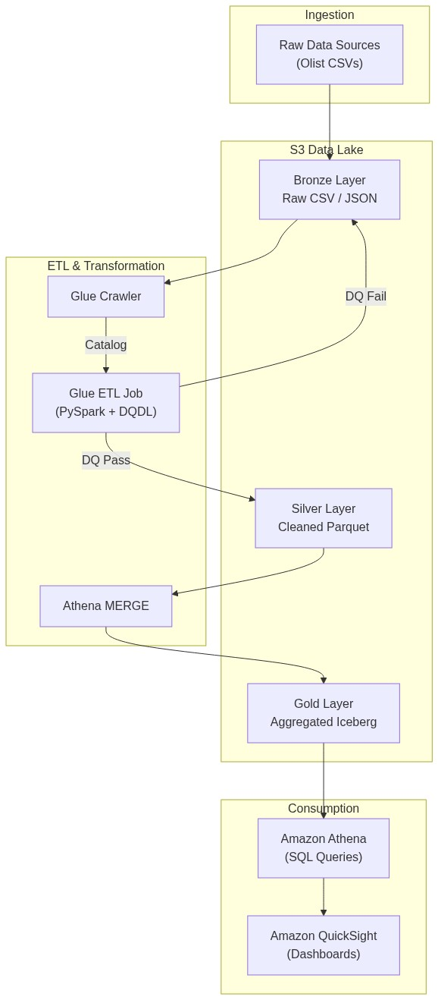
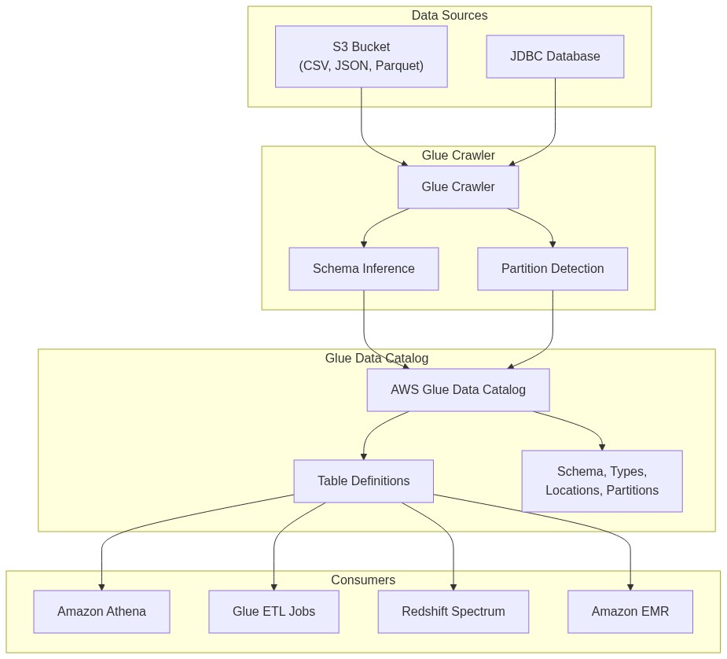
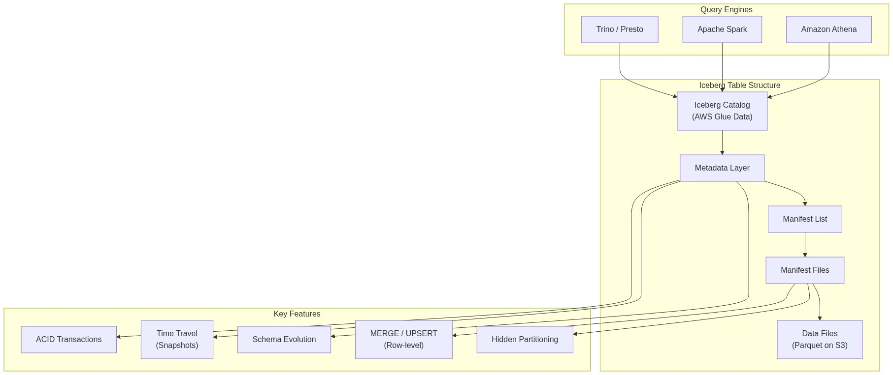
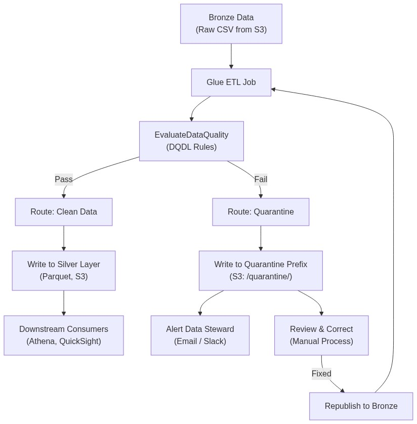
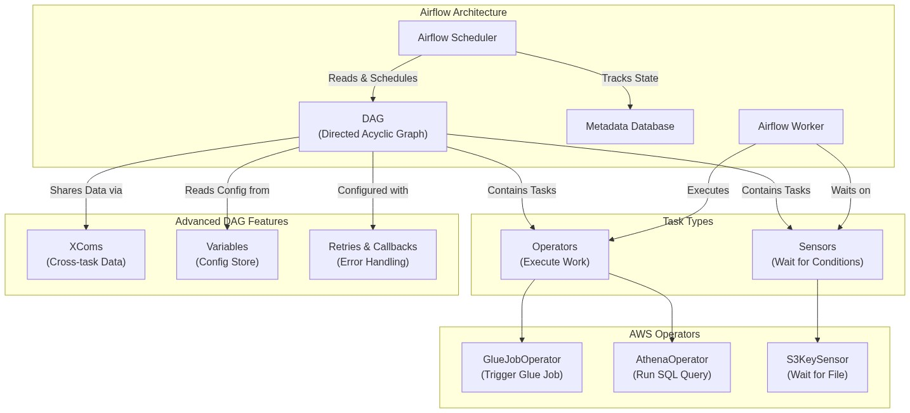

03 — glue-athena-airflow — Module Content Builder
Module Content
Explain the Bronze/Silver/Gold data lake architecture and provision an S3 bucket with the correct folder structure.
The Medallion Architecture organizes a data lake into three progressive layers — Bronze (raw data as ingested), Silver (cleaned and validated data), and Gold (aggregated, business-ready datasets). Each layer adds structure and quality, enabling downstream consumers to work with data appropriate to their needs without accessing raw sources.
Without a layered storage strategy, data lakes quickly become data swamps where raw, partially processed, and finalized data are indistinguishable. This makes pipeline debugging, data governance, and cost attribution nearly impossible. The Medallion approach gives engineers a clear separation of concerns and auditors a traceable data lineage from source to dashboard.
Raw data lands in the Bronze S3 prefix with minimal transformation and an append-only pattern. A Glue ETL job reads from Bronze, applies quality checks, and writes clean Parquet files to Silver. Downstream processes — either further Glue jobs or Athena queries — aggregate Silver into Gold, typically using Apache Iceberg for ACID compliance. Each layer is a separate S3 prefix with its own partition strategy.
This diagram illustrates the Medallion Architecture on AWS. Raw data is ingested into the Bronze layer, then cleaned and quality-checked by Glue ETL (passing to Silver, failing to quarantine). Silver data is aggregated into Gold Iceberg tables via Athena MERGE, and finally queried by Athena and visualized in QuickSight.

Configure an AWS Glue Crawler to discover schemas and populate the Glue Data Catalog from S3 data.
The AWS Glue Data Catalog is a centralized, Hive-compatible metadata repository that stores table definitions, schemas, partition information, and locations for data stored across S3 and other sources. Glue Crawlers automate schema discovery by scanning data sources, inferring column names and types, and creating or updating catalog tables without manual DDL.
A data catalog is the index of the data lake — without it, Athena, EMR, and Redshift Spectrum cannot discover or query data. Crawlers eliminate the need to write CREATE TABLE statements for every dataset, and they keep the catalog in sync as schemas evolve. This automation is critical for pipelines with frequent data uploads or schema drift.
A Crawler connects to a configured data source (S3 path, JDBC database, or DynamoDB table), samples files to infer structure, and writes table definitions to the Data Catalog. It detects partitions automatically from S3 folder structures (e.g., year=2026/month=06/). Crawlers can run on demand or on a schedule, and they can append new partitions or update schemas incrementally.
This diagram shows how a Glue Crawler connects to data sources (S3, JDBC), infers schemas and detects partitions, and populates the Glue Data Catalog. Multiple AWS analytics services — Athena, Glue ETL, Redshift Spectrum, and EMR — consume the catalog as their metadata source for querying and transforming data.

Set up Lake Formation to manage database permissions and enforce column-level access controls.
AWS Lake Formation provides a centralized permissions layer on top of the Glue Data Catalog, allowing administrators to grant fine-grained access at the database, table, column, or row level. It replaces the need for individual IAM policy management across every analytics service.
IAM policies alone cannot restrict specific columns or rows within a table. A BI analyst querying a customer orders table should see order totals and dates but not customer_id or credit_card_number. Lake Formation enforces these restrictions at the query engine level — Athena, Redshift Spectrum, and EMR all respect its policies.
A data lake administrator registers S3 locations with Lake Formation and grants granular permissions to IAM roles or users. Column-level security is configured through data filters that include or exclude specific columns. When a user queries a table through Athena, Lake Formation intercepts the request and returns only the data the principal is authorized to see.
Refer to Day 5 hands-on session for practical Lake Formation configuration.
Describe how Apache Iceberg enables ACID transactions, schema evolution, and time travel on the data lake.
Apache Iceberg is an open table format that adds a metadata layer between storage (Parquet files on S3) and compute (Athena, Spark, Trino). This metadata layer enables ACID transactions, row-level upserts (MERGE), snapshot-based time travel, and schema evolution — capabilities traditionally absent from data lakes built on plain Parquet or ORC files.
Standard data lakes cannot handle concurrent writes, row-level updates, or schema changes without complex workarounds. Iceberg solves these problems at the storage layer, transforming S3 from a simple file store into a transactional data platform. Engineers can run UPDATE and DELETE statements through Athena, roll back to a previous snapshot, and add columns without rewriting entire tables.
Iceberg maintains a tree of metadata files that track table snapshots, partition data, and manifest files pointing to actual data files. Each write operation creates a new snapshot. Queries read from a specific snapshot ID, ensuring consistent views. The AWS Glue Data Catalog acts as the Iceberg catalog, storing the current metadata pointer.
This concept map shows Apache Iceberg's layered metadata architecture. The catalog points to the current metadata layer, which references manifest lists and manifest files that track which data files belong to each snapshot. Key features — ACID transactions, time travel, schema evolution, row-level upserts, and hidden partitioning — are enabled by this metadata layer. Multiple query engines (Athena, Spark, Trino) can read the same Iceberg table simultaneously.

Provision an S3 Medallion bucket, run a Glue Crawler, and configure Lake Formation column-level security to protect sensitive data.
This session puts the first week of theory into practice. Learners will create the actual S3 bucket structure (bronze/silver/gold), upload raw CSV data, run a crawler to catalog it, and enforce column-level security through Lake Formation so that a restricted user cannot see sensitive columns.
Storage and security are the foundation of any governed data lake. Without completing this setup, no downstream ETL or analytics work is possible. This hands-on ensures learners can replicate the same patterns in their own environments.
Using the AWS Console or CLI, the learner creates an S3 bucket with three prefixes (bronze/, silver/, gold/), uploads the Olist e-commerce CSVs to bronze/, runs a Glue Crawler to populate the Data Catalog, then uses Lake Formation to grant SELECT access to a BI Analyst role while explicitly excluding the customer_id column.
S3 Bucket & Lake Formation Security Lab — The learner creates an S3 bucket with a bronze/silver/gold Medallion structure, uploads the Olist CSV data files, runs a Glue Crawler to catalog the Bronze table, and sets up a Lake Formation column-level security policy that masks customer_id from the BI Analyst role. The pass condition: querying the Bronze table as the BI Analyst role should return all columns except customer_id, which must produce a permission error.
Differentiate between Spark DataFrames and Glue DynamicFrames and write a basic Glue PySpark ETL script.
AWS Glue provides a custom data structure called a DynamicFrame that extends the standard Spark DataFrame. Unlike DataFrames, DynamicFrames do not require a fixed schema upfront — they are self-describing and can handle schema inconsistencies (e.g., a column that is a string in some records and an integer in others) using a choice type.
Real-world data is rarely clean and consistent. A DataFrame will fail or silently coerce types when it encounters schema drift. DynamicFrames preserve the ambiguity and give the engineer explicit control over how to resolve schema conflicts through transforms like ResolveChoice. This makes Glue ETL jobs more resilient to messy input data.
A Glue ETL job creates a DynamicFrame from a catalog table or S3 path using create_dynamic_frame.from_catalog(). The engineer can inspect schema choices, resolve them with ResolveChoice, convert to a DataFrame with .toDF() for Spark SQL operations, and convert back with DynamicFrame.fromDF() for Glue-specific transforms.
Write DQDL rules to enforce data quality constraints within a Glue ETL job.
Data Quality Definition Language (DQDL) is a domain-specific language for declaring data quality rules in AWS Glue. Instead of writing custom Python validation logic, an engineer declares rules like IsComplete "order_id", IsUnique "transaction_id", or CustomSql "SELECT * FROM rows WHERE payment_value > 0". Glue evaluates these rules against incoming data and produces a quality score.
Writing custom data quality checks in Python is repetitive, error-prone, and hard to maintain across multiple pipelines. DQDL provides a standardized, declarative syntax that is readable by both engineers and analysts. It also integrates with Glue's native monitoring, publishing quality scores to CloudWatch.
A DQDL ruleset is defined as a list of rules inside a square-bracket block: Rules = [IsComplete "order_id", IsUnique "order_id"]. The ruleset is passed to the EvaluateDataQuality transform in a Glue ETL script. The transform evaluates each rule against each row and returns pass/fail results, which can be used to split data into clean and quarantine streams.
Implement branching logic in a Glue job to route failed-quality records to a quarantine S3 prefix.
When data fails a DQDL quality check, it should not be silently dropped. The Quarantine Pattern — also called the Dead Letter Queue pattern — routes failed records to a separate S3 prefix (quarantine/) where data stewards can review, correct, and reprocess them. This ensures no data is lost and the pipeline remains auditable.
Silently dropping bad data creates a false sense of data quality. Downstream reports may be incomplete without anyone knowing why. A quarantine folder preserves the failed records, provides visibility into recurring quality issues, and allows reprocessing after the root cause is fixed.
After the EvaluateDataQuality transform in Glue, the ETL script splits the DynamicFrame into two streams: one for passing records (written to Silver) and one for failing records (written to the quarantine S3 prefix). The script adds metadata columns — dq_failed_rules, dq_timestamp, dq_source_path — to quarantined records for traceability.
This flowchart illustrates the Quarantine Pattern in Glue ETL. Data from Bronze is evaluated against DQDL rules. Passing records flow to the Silver layer for downstream consumption. Failing records are written to a quarantine S3 prefix, trigger an alert to a data steward, and can be reviewed, corrected, and republished back to Bronze for reprocessing.

Optimize Glue ETL performance through partitioning strategies, Parquet compression, and DynamicFrame grouping.
Three key techniques significantly impact Glue ETL performance and cost. Logical partitioning (e.g., partitioning by year/month) reduces the data scanned by downstream queries. Columnar compression (Parquet with Snappy or ZSTD) reduces storage and I/O. DynamicFrame Grouping coalesces many small files into fewer, larger partitions before processing, reducing Spark task overhead.
A poorly configured Glue job can scan ten times more data than necessary and run for hours on a cluster with excessive DPUs. Partition pruning, compression, and grouping directly reduce both runtime and cost — often by 50% or more on real-world workloads.
Partitioning is defined when writing data: df.write.partitionBy("year", "month").parquet(output_path). Compression is set via Spark configuration: spark.conf.set("spark.sql.parquet.compression.codec", "snappy"). Grouping is enabled with glueContext.create_dynamic_frame.from_options(..., grouping=True, groupSize=1048576).
Write a Glue PySpark job that applies DQDL rules, quarantines bad records, and writes clean Parquet to the Silver layer.
This session integrates the ETL and data quality concepts from Days 6–9 into a single working pipeline. Learners will write a real Glue job that reads from the Bronze table, applies DQDL rules, splits passing and failing records, and writes clean Parquet to Silver.
Building a complete ETL job with embedded quality checks is the core skill of a data engineer working with AWS Glue. After this session, learners will have a reusable script template they can adapt for any Glue pipeline.
The learner authors a Glue PySpark script that: (1) reads Bronze orders and payments tables via the Data Catalog, (2) joins them, (3) applies DQDL rules that drop rows where payment_value < 0 or order_status IS NULL, (4) writes the clean joined data to the Silver S3 prefix in Parquet format. Failing rows are quarantined to a separate S3 location.
Glue ETL with DQDL Lab — The learner writes a Glue PySpark job that reads Bronze orders and payments tables, joins them, applies DQDL rules (payment_value >= 0, order_status IS NOT NULL), quarantines failing records to a dead-letter S3 prefix, and writes clean Parquet to the Silver folder. Test: manually inject a negative payment value into the raw CSV and verify it is filtered out of the Silver output.
Define the core Airflow abstractions — DAGs, Operators, and Sensors — and describe how they compose a pipeline.
Apache Airflow structures pipelines as Directed Acyclic Graphs (DAGs). A DAG is composed of tasks, each represented by an Operator (e.g., GlueJobOperator to start a Glue job) or a Sensor (e.g., S3KeySensor to wait for a file). Dependencies between tasks define execution order, and the Airflow scheduler triggers DAG runs based on a schedule or event.
Without an orchestrator, ETL jobs must be triggered manually or through brittle cron scripts. Airflow provides a production-grade platform with scheduling, retry logic, dependency management, monitoring, and alerting. It is the industry standard for data pipeline orchestration.
A DAG is defined in a Python file that creates a DAG() context object and instantiates operators as tasks. Task dependencies are set with >> or .set_downstream(). The Airflow scheduler reads the DAG file, evaluates the schedule, and triggers runs. Sensors pause task execution until a condition is met — for example, S3KeySensor waits for a file to land in a specific S3 bucket.
This concept map shows the core Apache Airflow architecture. The Scheduler reads DAG definitions, tracks task states in the Metadata Database, and assigns work to Workers. A DAG contains Sensors (which wait for conditions like files landing in S3) and Operators (which execute work like triggering Glue jobs or running Athena queries). Advanced features — XComs, Variables, and Retries — add cross-task communication, configuration management, and error handling.

Configure an Amazon MWAA environment including requirements.txt, plugins, and DAG deployment.
Amazon Managed Workflows for Apache Airflow (MWAA) is a managed Airflow service that handles cluster provisioning, auto-scaling, and security patching. The engineer provides a requirements.txt file for Python dependencies, optional plugins.zip for custom Airflow plugins, and uploads DAG files to a designated S3 path.
Operating Airflow on self-managed infrastructure (EC2, EKS) requires significant DevOps effort — cluster sizing, logging, monitoring, and upgrades. MWAA abstracts this away, letting engineers focus on pipeline logic. It also integrates natively with AWS services like IAM, CloudWatch, and S3.
The engineer creates an MWAA environment through the AWS Console or CloudFormation, specifying an S3 bucket for DAGs, an execution IAM role, and a VPC with subnets. Python dependencies (e.g., apache-airflow-providers-amazon) are declared in requirements.txt and installed during environment creation. DAG Python files are uploaded to the dags/ folder in the S3 bucket and automatically synced to the Airflow workers.
Implement cross-task data passing with XComs, environment configuration with Variables, and error handling with retries and alerts.
Airflow tasks run in isolation. XComs (cross-communications) allow passing small amounts of metadata between tasks — for example, passing a GlueJobRunId from a GlueJobOperator to a downstream sensor. Variables provide a key-value store for environment configuration (e.g., S3 bucket names, database connection strings).
Real pipelines require tasks to share state. A Glue job produces a JobRunId that an AthenaOperator needs to check status. A pipeline should retry on transient failures and alert when retries are exhausted. These patterns separate production-grade DAGs from toy examples.
An operator pushes an XCom value using task_instance.xcom_push(key="job_run_id", value=run_id). Downstream tasks pull it with task_instance.xcom_pull(task_ids="glue_task", key="job_run_id"). Retries are configured with default_args={"retries": 3, "retry_delay": timedelta(minutes=5)}. Alert callbacks push notifications to Slack or SNS on failure.
Build a complete Airflow DAG in MWAA that chains an S3 sensor, a Glue job trigger, and an Athena query with error handling.
This session combines all Week 3 theory into a single, working DAG. The pipeline waits for a trigger file in S3, runs the Glue ETL job from Day 10, executes an Athena MERGE query to update the Gold Iceberg table, and includes retry and alert logic.
Automating the full ETL pipeline — from data arrival to dashboard-ready Gold tables — is the goal of pipeline orchestration. After this session, learners will have a reusable DAG template for any Glue + Athena pipeline.
The DAG defines four tasks in sequence: (1) S3KeySensor waits for a trigger file in the Bronze bucket, (2) GlueJobOperator starts the Glue job from Day 10, (3) AthenaOperator runs a MERGE INTO gold.table ... statement to aggregate Silver data into the Gold Iceberg table, (4) a PythonOperator or S3KeySensor verifies the Gold table was updated.
MWAA DAG Lab — The learner creates a DAG file (ecommerce_pipeline.py) with an S3KeySensor waiting for a trigger file, a GlueJobOperator running the ETL job from Day 10, and an AthenaOperator running a MERGE statement to update the Gold table. Retry logic (3 retries, 5-minute delay) is configured. The learner uploads the DAG to the MWAA environment, drops a trigger file into S3, and verifies all tasks complete successfully in the Airflow UI.
Design least-privilege IAM policies that grant each AWS service only the permissions required for its pipeline role.
Least-privilege access means each IAM role has exactly the permissions needed to perform its function and no more. A Glue Crawler role needs s3:GetObject on source buckets and glue:CreateTable on the Data Catalog. A QuickSight role needs athena:StartQueryExecution and s3:GetObject on the query results bucket — but not s3:DeleteObject on the source data.
Overly permissive IAM policies are the leading cause of data breaches in AWS. A single compromised role with s3:* access can expose the entire data lake. Least-privilege policies limit blast radius, satisfy compliance requirements (SOC 2, PCI-DSS), and make audit reviews straightforward.
The engineer creates separate IAM roles for each service: GlueCrawlerRole, GlueETLJobRole, MWAAExecutionRole, AthenaWorkgroupRole, QuickSightRole. Each role's inline policy enumerates only the required actions on specific resource ARNs. IAM Access Analyzer reviews these policies for unintended access and generates refined policy suggestions.
Configure Athena Workgroups to enforce data-scan limits and isolate query environments between teams.
Athena Workgroups are logical containers that separate query execution, history, and cost tracking across teams or applications. Each workgroup can have its own query result location, encryption settings, data usage limits (per-query and per-workgroup), and CloudWatch metrics — enabling administrators to control costs and audit usage independently.
Athena charges per terabyte scanned. A single runaway query scanning 50 TB can cost hundreds of dollars. Workgroups prevent this by enforcing per-query data scan caps. They also isolate query environments so an engineering team's experimental queries do not affect the analytics team's dashboards.
The administrator creates workgroups (e.g., data-engineering, analytics, ad-hoc) and assigns IAM policies that restrict users to specific workgroups. Per-query limits (e.g., 10 TB max per query) are set in the workgroup settings. Workgroup-wide daily limits trigger SNS alerts when breached. CloudWatch captures per-workgroup metrics for cost allocation.
Execute Iceberg-specific SQL operations in Athena including MERGE (upsert), row-level UPDATE, and time travel queries.
Apache Iceberg extends Athena's SQL capabilities beyond read-only SELECT. Using standard SQL, an engineer can run MERGE INTO for upserts (insert or update matching rows), UPDATE and DELETE for row-level modifications, and SELECT ... FOR SYSTEM_TIME AS OF for time travel — querying a table as it existed at a previous snapshot.
Traditional data lakes cannot update or delete individual rows. Business requirements like GDPR right-to-erasure, daily revenue aggregation updates, and point-in-time reporting all require these capabilities. Iceberg brings warehouse-like DML to the data lake without moving data out of S3.
A MERGE INTO statement reads the current snapshot, applies the upsert logic, and writes a new snapshot: MERGE INTO gold.revenue_summary t USING silver.daily_orders s ON t.order_id = s.order_id WHEN MATCHED THEN UPDATE SET t.revenue = s.total WHEN NOT MATCHED THEN INSERT (order_id, revenue) VALUES (s.order_id, s.total). Time travel queries reference previous snapshots: SELECT * FROM gold.revenue_summary FOR SYSTEM_TIME AS OF TIMESTAMP '2026-05-01 00:00:00'.
Build an executive dashboard in QuickSight connected to Athena and document the data catalog with a Data Dictionary.
Amazon QuickSight is a serverless BI service that connects directly to Athena and creates interactive dashboards with KPIs, charts, and filters. A Data Dictionary documented in the Glue Catalog (via table and column descriptions) translates technical schema names into business terminology so analysts and business users can discover and trust datasets.
A pipeline is only as valuable as its output. Dashboards turn transformed data into business decisions. Without a Data Dictionary, a column named cust_act_dt is meaningless to a finance analyst — adding a description ("Date the customer account was last activated") makes the data usable and reduces misinterpretation.
The engineer connects QuickSight to the Athena Gold database, selects the aggregated Iceberg table, and builds visuals: Total Revenue KPI, Late Delivery Rate KPI, Daily Revenue Trend line chart, and Order Status pie chart. The Data Dictionary is populated by adding COMMENT entries to Glue Catalog tables and columns via ALTER TABLE table_name SET TBLPROPERTIES ('comment' = 'description').
Build the storage foundation and ETL pipeline for a governed e-commerce data lake using S3, Glue Catalog, and Glue ETL with DQDL.
The capstone integrates all skills from Weeks 1–2 into a single project. The learner provisions the Medallion S3 structure, catalogs data, writes a Glue ETL job with DQDL quality rules and quarantine routing, and validates the output against business requirements — exactly as they would in a production data engineering role.
This is the first half of an end-to-end governed data lake. Completing this validates that the learner can independently provision, catalog, transform, and quality-check data using AWS serverless services.
The learner (1) creates an S3 bucket with bronze/silver/gold/ paths, (2) runs a Glue Crawler on the Bronze folder, (3) authors a Glue ETL job that reads Bronze tables, applies DQDL rules (IsComplete "order_id", CustomSql "payment_value >= 0"), quarantines failures to a quarantine/ prefix, and writes clean Parquet to Silver, (4) enables Iceberg on the Gold table for atomic commits, (5) runs DESCRIBE queries in Athena to verify schema and column comments are populated.
Capstone Part 1 — The learner creates the S3 Medallion bucket structure, runs a Glue Crawler on Bronze, writes a Glue PySpark ETL job with DQDL rules that quarantine bad records, and writes clean Parquet to Silver. The pass condition: data that fails quality checks must appear in the quarantine/ prefix and NOT in the Silver Parquet output. Verification is done through Athena queries.
Complete the pipeline by adding MWAA orchestration, an Athena-powered QuickSight dashboard, and end-to-end testing with quality and governance validation.
The second half of the capstone adds the orchestration and visualization layers. The learner writes an Airflow DAG that automates the ETL pipeline, builds a QuickSight dashboard on the Gold table, and runs end-to-end tests that validate data quality, governance restrictions, and metadata completeness.
This is the complete data lifecycle — from raw ingestion to governed, orchestrated, and visualized data. Passing this capstone demonstrates readiness to build production-grade data pipelines on AWS independently.
The learner (1) writes an MWAA DAG (S3KeySensor → GlueJobOperator → AthenaOperator) that triggers the Glue ETL job and updates the Gold table via MERGE, (2) connects QuickSight to Athena Gold and builds KPI dashboards, (3) runs governance tests: DESCRIBE to verify column comments, and a restricted-user query to confirm Lake Formation column masking is enforced.
Capstone Part 2 — The learner creates an MWAA DAG that orchestrates the Glue ETL job and Athena MERGE, builds a QuickSight dashboard connected to Athena Gold, and runs governance tests: (1) quality test — upload a file with negative prices and verify they are quarantined, (2) metadata test — run DESCRIBE to confirm column comments exist, (3) governance test — attempt to query a restricted column with a limited-access user and verify it fails.
All module content is complete. Please review each day's content and validate all supplemental reading links before proceeding to Skill 5: Quiz Generator. If visuals are needed, trigger Skill 4 for flagged modules.